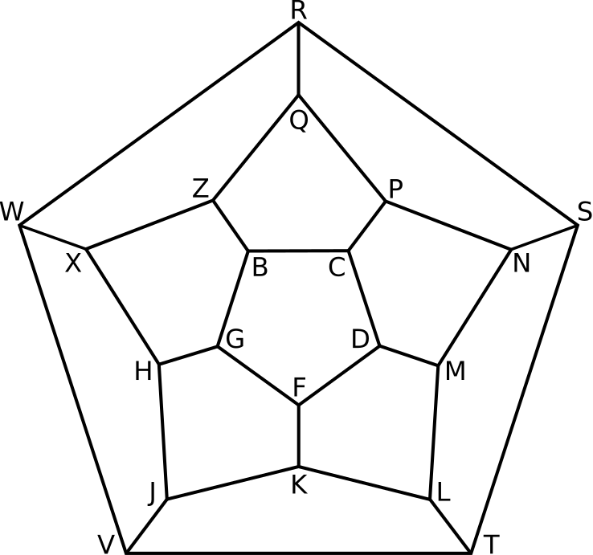
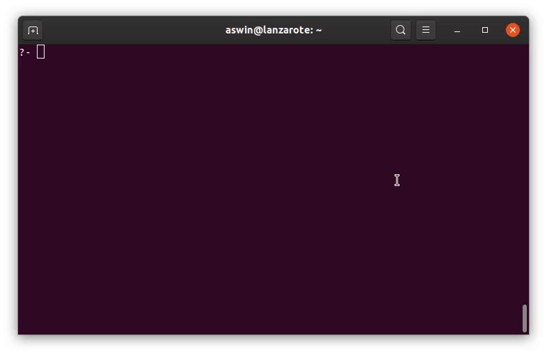

The Irish mathematician William Rowan Hamilton is probably best known for discovering quaternions. He is also the inventor of the Icosian game.
In this blog post I’ll describe the game and share some Prolog code for solving it.
How to play the Icosian game
The game’s objective is to find a path around a dodecahedron such that every vertex is visited once, no edge is visited multiple times, and the path ends in de same vertex it started from. Instead of using a 3d dodecahedron, the game was distributed as a pegboard with holes at the vertices of the 2d dodecahedral graph.

The game was meant to be played by two people. The first player would set up the challenge by placing the first five pegs in any five consecutive holes and then the second player would be required to place the remaining fifteen pegs consecutively in such a way that the succession would be cyclical.
Some graph theory
In graph theory, a path that visits every vertex of a graph once is now known as a Hamiltonian path. A path that visits every vertex once and that ends in the same vertex as it started off from is called a Hamiltonian cycle. So playing this game is essentially searching for a Hamiltonian cycle in the dodecahedral graph.

Solving this game using Prolog
The Icosian game was never a commercial success, probably because it’s too easy. I wrote some Prolog code to solve this game and explore possible solutions.
icosian.pl
% A Prolog solver for the Icosian game
% https://en.wikipedia.org/wiki/Icosian_game
icosian_puzzle_edges([
(b,c), (b,g), (b,z), (c,d), (c,p), (d,f), (d,m), (f,g), (f,k), (g,h),
(h,j), (h,x), (j,k), (j,v), (k,l), (l,t), (l,m), (m,n), (n,p), (n,s),
(p,q), (q,z), (q,r), (r,s), (r,w), (s,t), (t,v), (v,w), (w,x), (x,z)
]).
connected(Adj,P,Q) :- member((P,Q),Adj); member((Q,P),Adj).
graph_order(Adj,N) :-
findall(A,connected(Adj,A,_),B0),
sort(B0,B),
length(B,N).
hamiltonian_cycle(Adj,[Start|TourRest]) :-
graph_order(Adj,N),
append([[Start],MidTour,[Start]],[Start|TourRest]),
length([Start|MidTour],N),
hamiltonian_cycle(Adj,Start,MidTour,[Start]).
hamiltonian_cycle(Adj,Start,[],[LastVisited|_]) :-
connected(Adj,LastVisited,Start).
hamiltonian_cycle(Adj,Start,[Head|Tail],[VisitedHead|VisitedTail]) :-
connected(Adj,VisitedHead,Head),
not(member(Head,[VisitedHead|VisitedTail])),
hamiltonian_cycle(Adj,Start,Tail,[Head,VisitedHead|VisitedTail]).
print_icosian_puzzle :- print_icosian_solution([]).
edge_in_tour(P,Q,Tour) :-
append([_,[P,Q],_],Tour);
append([_,[Q,P],_],Tour).
format_edge(P,Q,Tour,Atom,Out) :-
edge_in_tour(P,Q,Tour),
format(atom(Out),'\e[31m~w\e[0m',[Atom]), !.
format_edge(_P,_Q,_Tour,Atom,Atom).
print_icosian_solution(Tour) :-
findall(F,(member((P,Q,A),[
(b,c,'-'), (b,g,'/'), (b,z,'\\'), (c,d,'\\'), (c,p,'/'),
(d,f,'/'), (d,m,'\\'), (f,g,'\\'), (f,k,'|'), (g,h,'/'),
(h,j,'\\'), (h,x,'\\'), (j,k,'/'), (j,v,'/'), (k,l,'\\'),
(l,t,'\\'), (l,m,'/'), (m,n,'/'), (n,p,'\\'), (n,s,'---'),
(p,q,'\\'), (q,z,'/'), (q,r,'|'), (r,s,'\\'), (r,w,'/'),
(s,t,'/'), (t,v,'-------'), (v,w,'\\'), (w,x,'---'), (x,z,'/')
]),format_edge(P,Q,Tour,A,F)),[BC,BG,BZ,CD,CP,DF,DM,FG,FK,GH,
HJ,HX,JK,JV,KL,LT,LM,MN,NP,NS,PQ,QZ,QR,RS,RW,ST,TV,VW,WX,XZ]),
format(' R',[]), nl,
format(' ~w~w~w',[RW,QR,RS]), nl,
format(' ~w ~w ~w',[RW,QR,RS]), nl,
format(' ~w ~w ~w',[RW,QR,RS]), nl,
format(' ~w Q ~w',[RW,RS]), nl,
format(' ~w ~w ~w ~w',[RW,QZ,PQ,RS]), nl,
format(' ~w ~w ~w ~w',[RW,QZ,PQ,RS]), nl,
format(' ~w Z P ~w',[RW,RS]), nl,
format(' ~w ~w ~w ~w ~w ~w',[RW,XZ,BZ,CP,NP,RS]), nl,
format(' ~w ~w B~wC ~w ~w',[RW,XZ,BC,NP,RS]), nl,
format(' ~w ~w ~w ~w ~w ~w',[RW,XZ,BG,CD,NP,RS]), nl,
format(' ~w ~w G D ~w ~w',[RW,XZ,NP,RS]), nl,
format('W~wX ~w ~w ~w ~w N~wS',[WX,GH,FG,DF,DM,NS]), nl,
format(' ~w ~w ~w ~w ~w ~w ~w ~w',[VW,HX,GH,FG,DF,DM,MN,ST]), nl,
format(' ~w H F M ~w',[VW,ST]), nl,
format(' ~w ~w ~w ~w ~w',[VW,HJ,FK,LM,ST]), nl,
format(' ~w ~w K ~w ~w',[VW,HJ,LM,ST]), nl,
format(' ~w ~w ~w ~w ~w ~w',[VW,HJ,JK,KL,LM,ST]), nl,
format(' ~w J L ~w',[VW,ST]), nl,
format(' ~w ~w ~w ~w',[VW,JV,LT,ST]), nl,
format(' V~wT',[TV]), nl.
solve_icosian_puzzle :-
icosian_puzzle_edges(Adj),
hamiltonian_cycle(Adj,Tour),
print_icosian_solution(Tour).The icosian_puzzle_edges/1 predicate defines the graph by specifying a list of edges between vertices. This list is used by the connected/3 predicate which checks whether there is an edge between two vertices.
The hamiltonian_cycle/2 predicate defines the main algorithm for finding a Hamiltonian cycle on the graph, given a starting vertex. After determining the number of vertices in the graph, it recursively tries to find a cycle that visits each vertex exactly once.
The print_icosian_solution/1 predicate prints out the solution to the Icosian game, highlighting the edges in the Hamiltonian cycle found by the hamiltonian_cycle/2 predicate.
You can find a copy of this code as a GitHub gist here.
How to use this code
To use this program, open the icosian.pl file in your preferred Prolog interpreter (I always use SWI-Prolog). Entering solve_icosian_puzzle. and pressing ; repeatedly will yield possible solutions.

Suppose you want to explore how the cycle that starts with the vertices Q, R, S, N, P could be continued, you would enter:
icosian_puzzle_edges(Adj), Tour = [q,r,s,n,p|Rest], hamiltonian_cycle(Adj,Tour), print_icosian_solution(Tour).This game might remind you of the Travelling Salesman Problem (TSP). Finding a Hamiltonian cycle can be considered a special case of the TSP, namely, one where each pair of vertices with an edge between them has distance 1, while vertex pairs without an edge between them are separated by a distance of infinity.